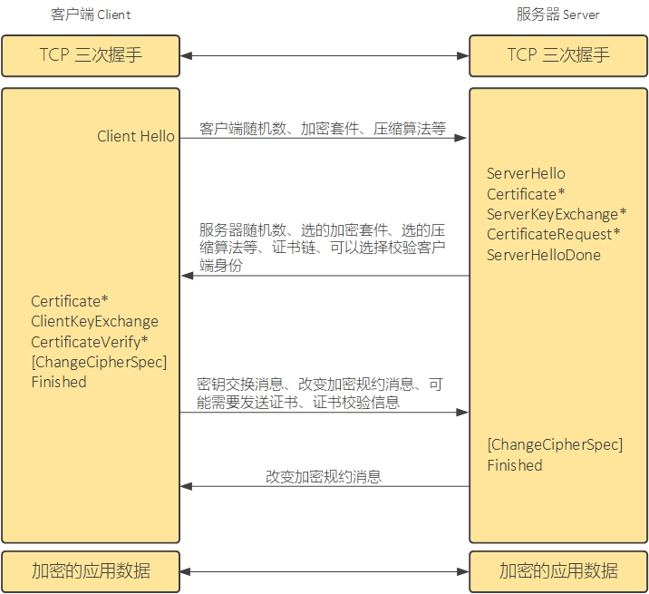
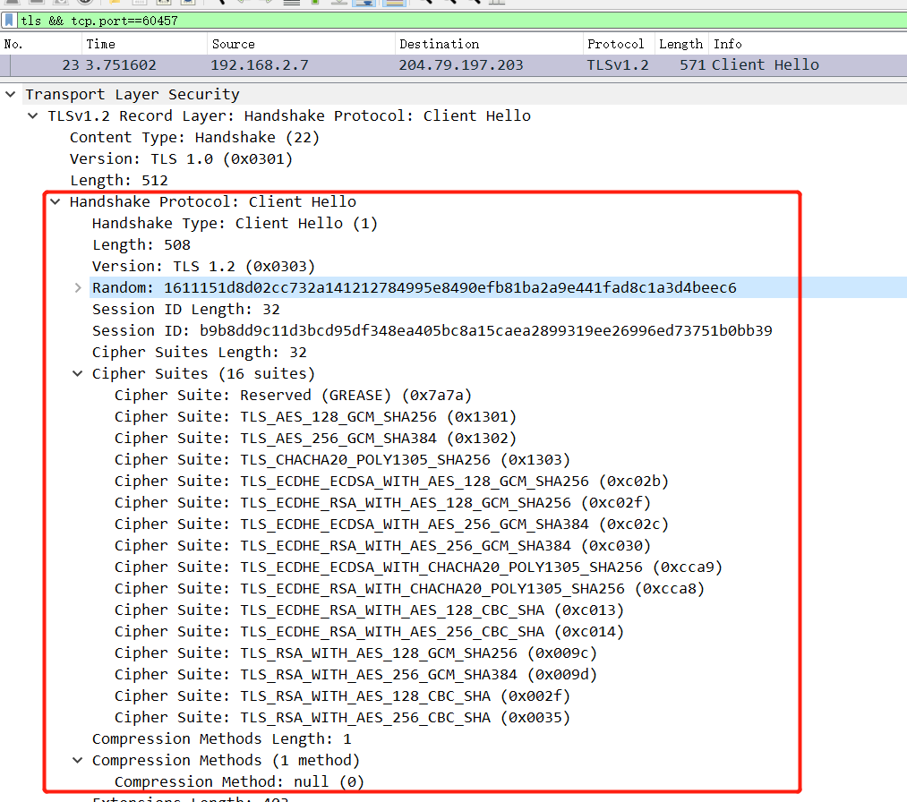
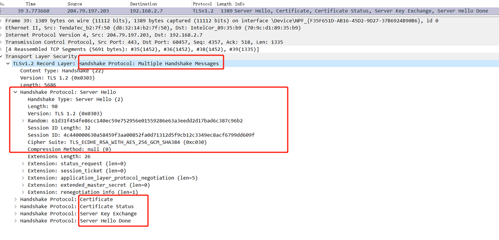
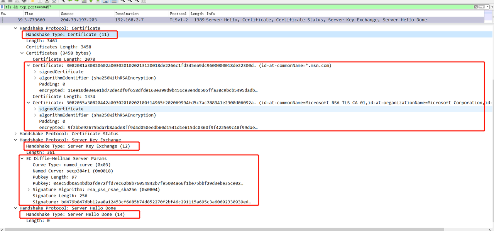
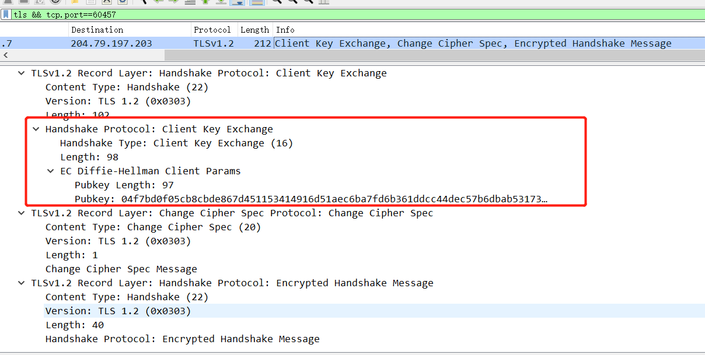
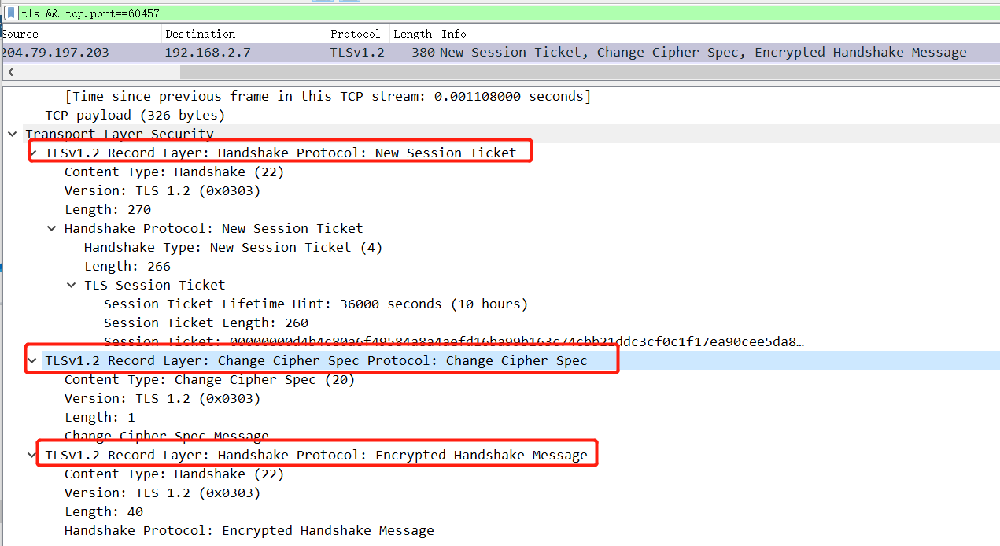
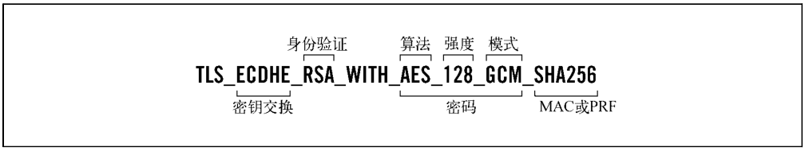
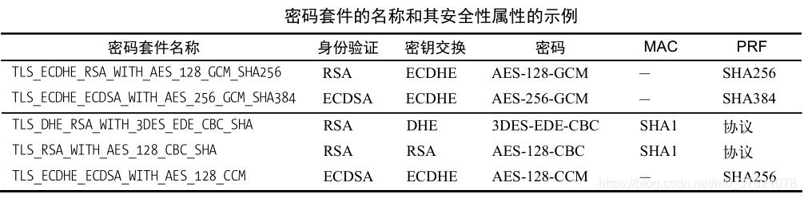

SSL/TLS 握手过程
首先得完成传输层的握手，然后进入SSL握手阶段：
客户端发送Client Hello Message，表明自己可以使用的SSL版本（从高到低尝试）、加密套件及相应参数如：
- client_version(SSL版本)：TLS1.2
- random：客户端随机数，用于后续协商密钥。
- cipher_suites：支持的加密套件列表（由高到低排序）。
- compression_methods：压缩算法列表（由高到低排序）。为null，表示不要压缩

服务器接收到ClientHello后，会返回ServerHello。服务器从客户端在ClientHello中提供的密码套件、SSL/TLS版本、压缩算法列表里选择它所支持的项，并把它的选择包含在ServerHello中告知客户端。
- 服务器也用TLS 1.2；提供服务器随机数；没有找到这个客户端的SessionID，所以填入了新的SessionID；选择了TLS_ECDHE_RSA_WITH_AES_128_GCM_SHA384加密套件；同意不压缩数据；

- 服务器也用TLS 1.2；提供服务器随机数；没有找到这个客户端的SessionID，所以填入了新的SessionID；选择了TLS_ECDHE_RSA_WITH_AES_128_GCM_SHA384加密套件；同意不压缩数据；
Server -> Client：Certificate、Server Key Exchange、Certificate Request、ServerHello Done：
- Certificate服务器证书：和所选密钥套件中密钥交换算法（Key Exchange）匹配，用于客户端验证服务器身份和交换密钥的X.509证书。
- Server Key Exchange服务器密钥交换信息：如果服务器没有证书，或者服务器的证书仅用来签名（如DSS证书、签名RSA证书），那么就需要发送这条消息。
- Certificate Request证书请求：要求客户端也发送它的证书，让服务端校验客户端的身份。（可选）
- Server Hello Done：一条简单的表明状态的空消息。

客户端校验服务端身份
- 如果发现证书不合法，客户端可以发起告警信息。
Client –> Server：Certificate Verify、Change Cipher Spec、Encrypted Handshake Message
- Certificate客户端证书：如果服务器发送了”Certificate Request”，要求校验客户端身份，那么客户端需要回应自己的证书。如果客户端没有合适的证书，直接抛出告警信息让服务端处理（服务端的处理方式通常就是断开TCP连接）。和所选密钥套件中密钥交换算法（Key Exchange）匹配的，用于服务器验证客户端身份的X.509证书。
- Client Key Exchange客户端密钥交换信息：合法性校验通过后，客户端计算产生随机数字Pre-master，并用证书公钥加密，发送给服务器
- Change Cipher Spec更换加密规约

服务端回应客户端
- ****服务端同样地发送Change Cipher Spec、Finish（Encrypted Handshake Message）消息，然后开始数据传输。

- ****服务端同样地发送Change Cipher Spec、Finish（Encrypted Handshake Message）消息，然后开始数据传输。
TLS 加密套件
TLS 使用到的认证加密算法、完整性校验算法、密钥协商算法、数字签名算法等，这些算法都是要配合使用的（单独使用无法保证信息安全传输），各类算法相互组合可以形成一套套加密方案。TLS 握手阶段，服务器与客户端需要协商都使用哪些加密算法，如果逐个协商显然效率较低，TLS将可用的加密算法组合为一个个密码套件，服务器与客户端只要协商一种密码套件，就确定了整个加密方案中用到的所有加密算法，能提高通信效率。
加密套件格式说明：


💡 TLS（传输层安全性）协议各版本都包含了一系列的加密套件，这些套件可能因为新的安全研究、攻击方法的发现或更高效的算法的出现而被认为是不安全的。随着TLS版本的更新，一些加密套件被废弃，因为它们不再能提供足够的安全性。以下是各个TLS版本中被认为不安全的加密套件及其原因：
TLS 1.1 中的不安全加密套件：
- 使用RC4加密算法的套件：RC4是一种流密码，它受到多种攻击的影响，例如密钥恢复攻击和偏差攻击，导致其不再安全。
- 使用DES或3DES加密算法的套件：DES由于其较短的密钥长度（56位）很容易受到暴力破解攻击。3DES虽然比DES安全，但是因为它的有效密钥长度（112位）也逐渐变得不够安全，以及运算速度慢，因此不再推荐使用。
- 使用MD5或SHA-1散列函数的套件：MD5和SHA-1都受到了碰撞攻击的影响，这意味着可以找到两个不同的输入产生相同的散列输出，从而破坏了其安全性。
TLS 1.2 中的不安全加密套件：
- TLS 1.2继承了TLS 1.1的很多套件，并在此基础上添加了新的套件。虽然TLS 1.2引入了更多安全的选项，如AES-GCM，但它仍然支持一些不安全的套件，比如：
- 使用CBC模式的块密码套件：这些套件受到各种攻击的影响，如Padding Oracle攻击和Lucky Thirteen攻击，这些攻击可以导致信息泄露。
- 使用RSA加密而不是前向保密的密钥交换套件：如果服务器的RSA私钥被破解，那么之前的所有使用该密钥的通信都可以被解密，而前向保密的套件如DHE或ECDHE可以避免这个问题。
TLS 1.3 中废弃的不安全套件：
TLS 1.3大幅减少了支持的加密套件，只保留了认为是安全的套件。TLS 1.3中废弃了所有以下类型的套件：
- 所有使用CBC模式的块密码套件。
- 所有使用RC4、DES或3DES的套件。
- 所有使用MD5或SHA-1的套件。
- 不支持前向保密的套件，比如那些使用RSA密钥交换的套件。
- 所有使用静态密钥交换的套件（例如固定DH）。
TLS 1.3只支持使用AEAD（Authenticated Encryption with Associated Data）密码算法的套件，如AES-GCM和ChaCha20-Poly1305，以及使用更安全的散列算法SHA-256和SHA-384的套件。这些更改反映了不断提高的安全标准和对用户数据保护的重视。
TLS1.3 密码套件
1 | TLS13-AES128-GCM-SHA256 |
TLS1.2 密码套件
1 | TLS_RSA_WITH_NULL_SHA256 |